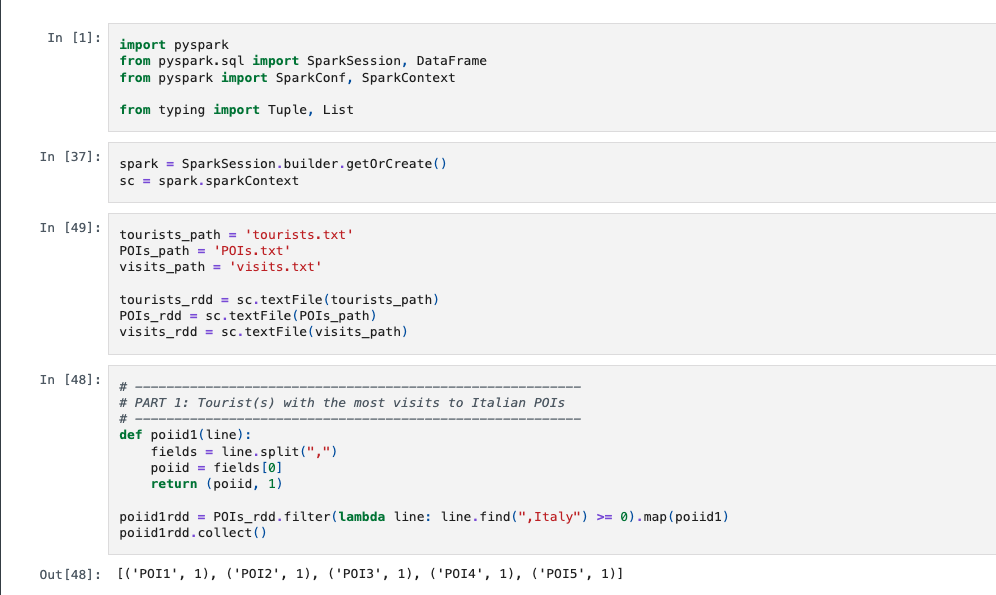
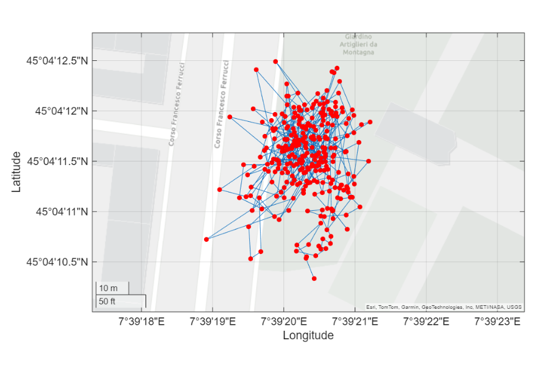
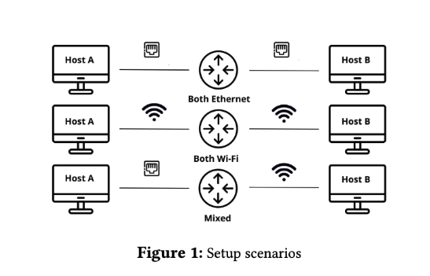
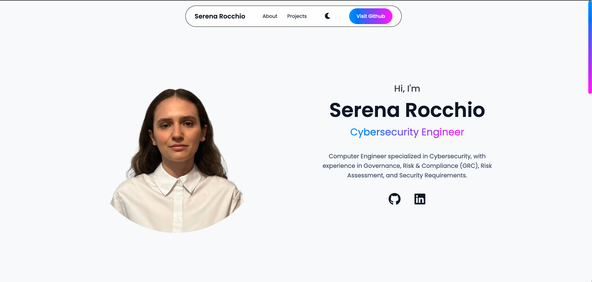
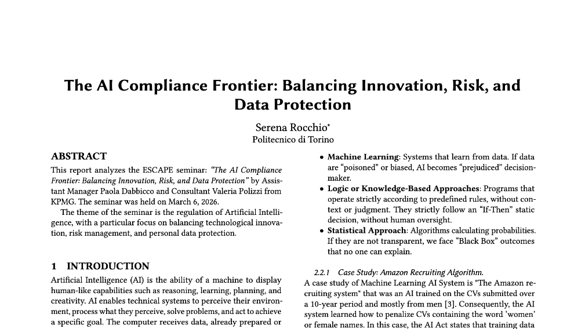

Computer Engineer specialized in Cybersecurity, with experience in Governance, Risk & Compliance (GRC), Risk Assessment, and Security Requirements.

Analysis processing 1 Billion+ records of an international company that tracks tourists as they visit points of interest worldwide.

Explore how modern receivers calculate Position, Velocity, and Time (PVT) and their susceptibility to intentional attacks and environmental interference.

Evaluate the efficiency of wireless and physical network links by comparing theoretical predictions with experimental results across various LAN configurations.

A responsive personal website built with HTML, CSS, and JavaScript to showcase cybersecurity projects.

The AI Compliance Frontier: Balancing Innovation, Risk, and Data Protection.